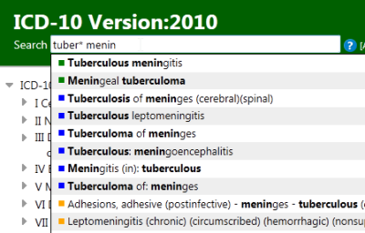

Quick search helps you quickly navigate to a particular category. It searches only titles, inclusions and the index and it works by starting to search as you type and provide you options in a dynamic dropdown list.
You may use this feature by simply typing the keywords that you're looking for and clicking on one of the items that appear in the dropdown list. The system will automatically load the item that you've picked.
You may use wildcards '*' as well to find similar words or to simply save some typing.
For example, tuber* confirmed will hit both tuberculosis and tuberculous together with the word 'confirmed'
If you need to search other fields than the title, inclusion and the index then you may use the advanced search feature
You may also use ICD codes here in order to navigate to a known ICD category.
The colored squares show from where the results are found.
(green:Title,
blue:inclusions, orange:index, red:ICD code)
You don't need to remeber the colors as you may hover your mouse on these
squares to read the source.